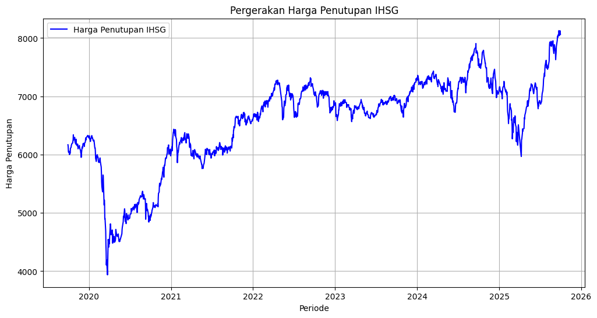
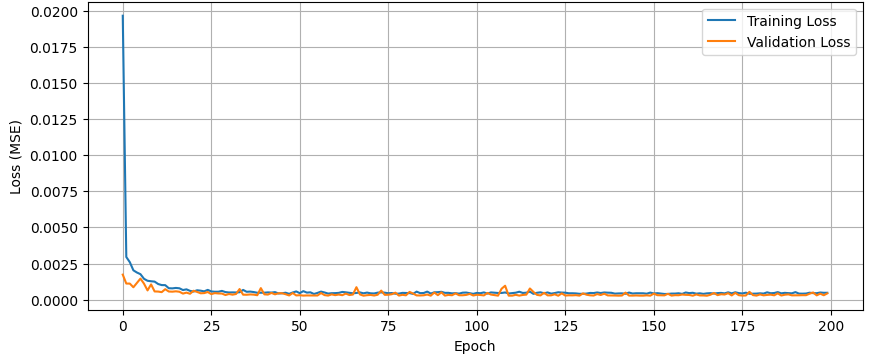

Proyek ini merupakan hasil dari tugas akhir (skripsi) tentang implementasi model Deep Learning yaitu BiLSTM dalam peramalan (forecasting) harga penutupan harian Indeks Harga Saham Gabungan (IHSG). Fokus utama proyek tugas akhir ini adalah mengevaluasi keakuratan model dalam menangkap volatilitas pasar modal di Indonesia. Pada proyek ini dilakukan pembagian data splitting sebanyak 3 skenario/kategori, diantaranya Kategori I (60:10:30), Kategori II (70:10:20), dan Kategori III (90:10:10). Proyek ini juga melakukan hyperparameter tuning dengan menggunakan metode random search yang memiliki konfigurasi hyperparameter diantaranya neuron, batch size, learning rate, epoch, dan drop out. Pelatihan dilakukan sebanyak 20 kali pada setiap kategori untuk mengetahui kestabilan model. Evaluasi yang digunakan adalah Mean Percentage Error (MAPE) dan didapatkan nilai MAPE terkecil adalah 0,799345%.
Menggunakan pendekatan Bidirectional Long Short-Term Memory (BiLSTM) yang memungkinkan model belajar dari urutan data masa lalu dan masa depan secara bersamaan.
Data yang digunakan untuk proyek ini adalah data harga penutupan IHSG yang diperoleh dari Yahoo Finance dari tanggal 30 September 2019 sampai dengan 30 September 2025. Data harga penutupan IHSG terjadi pada tabel di bawah ini
Tabel: Data Lengkap
Statistika deskriptif dari data tersebut tersaji dalam tabel di bawah ini:.
| Statistika Deskriptif | Harga Penutupan |
|---|---|
| Jumlah data | 1.448 |
| Rata-rata | 6.572,458224 |
| Standar deviasi | 770,836652 |
| Median | 6.793,089600 |
| Nilai minimum | 3.937,632080 |
| Nilai maksimum | 8.126,558105 |
Visualisasi bertujuan untuk mengetahui pola pergerakan harga penutupan IHSG pada periode observasi.

Sliding window merupakan proses membagi data ke dalam beberapa sequence dan memiliki panjang sequence yang sama. Pada proyek ini besar sequence yang digunakan adalah 30, Sliding window bekerja dengan cara menggeser satu persatu data dari awal hingga akhir sampai membentuk sequence. Sedangkan, Visualisasi ini dikhususkan bertujuan untuk mengetahui skala pembagian data harga penutupan IHSG dari 3 kategori.
Hyperparameter Tuning dilakukan untuk mengetahui kombinasi dari hyperparameter terbaik. Ruang pencarian hyperparameter yang digunakan tersaji pada tabel di bawah ini:
| Jenis Hyperparameter | Ruang Pencarian |
|---|---|
| Neuron | 5, 10, 15, 20, 25 |
| Dropout | 0,1; 0,2; 0,3; 0,4; 0,5 |
| Learning rate | 0,01; 0,001; 0,0001; 0,00001; 0,000001 |
| Batch size | 4, 16, 32, 64, 128 |
| Epoch> | 50, 100, 150, 200, 250 |
Setelah dilakukan sebanyak 50 iterasi dengan metode Random Search pada masing-masing kategori , diperoleh hyperparameter terbaik yang tersaji pada tabel di bawah ini:
| Kategori | Neuron | Dropout | Learning rate | Batch size | Epoch |
|---|---|---|---|---|---|
| I | 15 | 0,1 | 0,01 | 64 | 150 |
| II | 20 | 0,1 | 0,01 | 16 | 200 |
| II | 20 | 0,1 | 0,01 | 16 | 200 |
Training dilakukan untuk melatih model BiLSTM dengan kombinasi hyperparameter terbaik yang terbentuk. Training model dilakukan sebanyak 20 kali yang bertujuan untuk mengetahui stabilitas model dengan cara mengukur rata-rata dan standar deviasi pada setiap kategori. Pada setiap kategori dilakukan 20 kali training sehingga akan terbentuk 20 model pada setiap kategori. Model terbaik diperoleh dari Kategori III (80:10:10) Pada saat training ke-20. Pada Kategori III juga didapatkan rata-rata MAPE dari keseluruhan proses training adalah 0,926998% dan standar deviasi 0,152902%, yang menunjukkan kategori III jauh lebih stabil dibandingkan Kategori lainnya. Evaluasi yang digunakan adalah MAPE, besar MAPE pada model terbaik adalah 0,799346%.
Tabel: Rincian Hasil Training dan Evaluasi Model BiLSTM
Pada saat training, loss function yang digunakan adalah Mean Square Error (MSE). Visualisasi nilai loss function pada saat training dari model dengan nilai MAPE terendah terlihat seperti gambar di bawah ini:

Grafik di atas menandakan bahwa model terbaik tidak mengalami overfitting maupun underfitting dikarenakan antara loss data training dan loss data validation kurvanya sangat berdekatan.
Setelah dilakukan training kemudian model terbaik akan di uji melalui data uji. Berikut hasil peramalan data uji sebagai testing.
Tabel: Hasil Testing Model Terbaik
Berikut merupakan hasil inferensi model dengan meramalkan 30 hari berikutnya setelah tanggal terakhir periode pengamatan.
Tabel: Inferensi Model